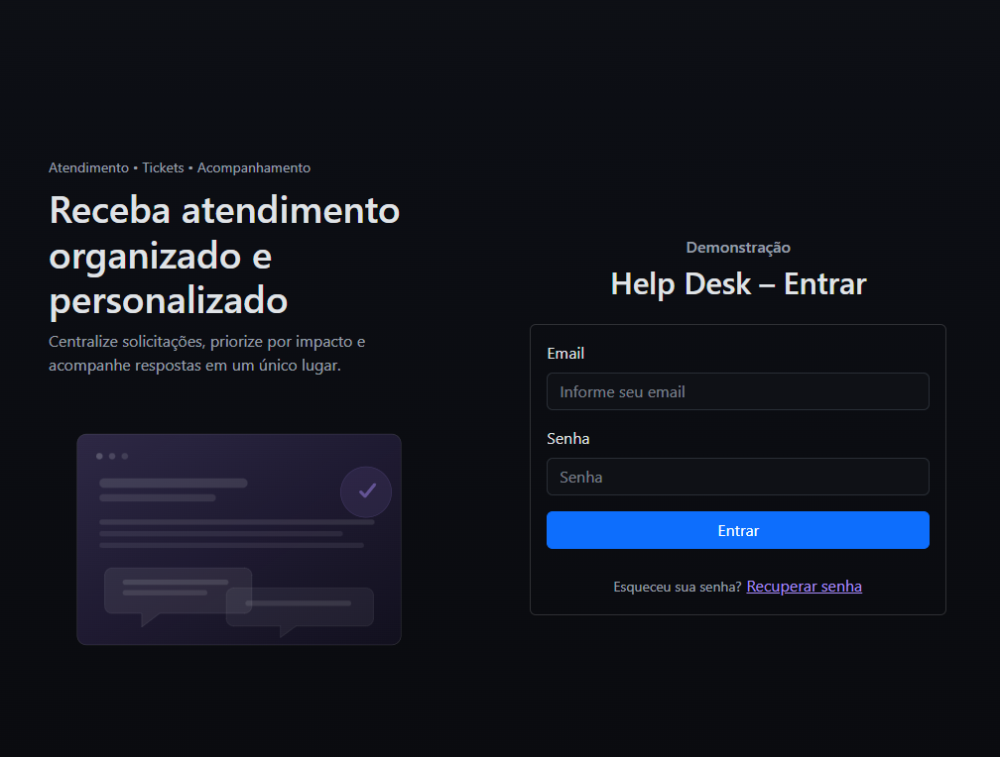
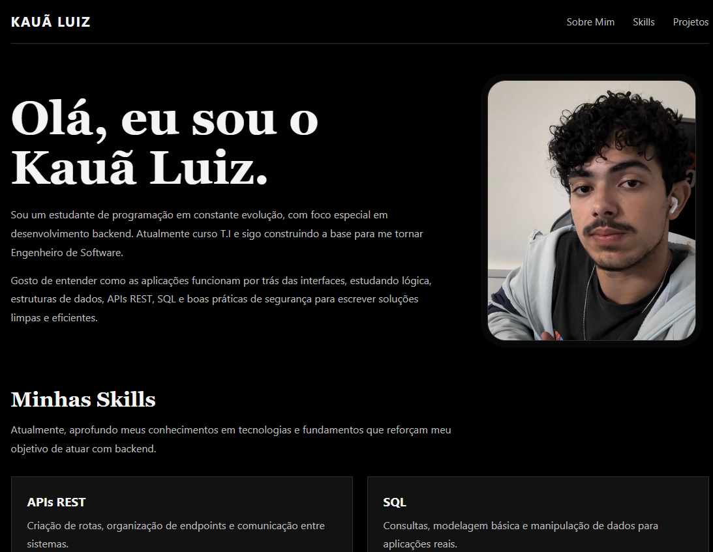

APIs REST
Criação de rotas, organização de endpoints e comunicação entre sistemas.
Kauã Luiz
Sou um estudante de programação em constante evolução, com foco especial em desenvolvimento backend. Atualmente curso T.I e sigo construindo a base para me tornar Engenheiro de Software.
Gosto de entender como as aplicações funcionam por trás das interfaces, estudando lógica, estruturas de dados, APIs REST, SQL e boas práticas de segurança para escrever soluções limpas e eficientes.
Atualmente, aprofundo meus conhecimentos em tecnologias e fundamentos que reforçam meu objetivo de atuar com backend.
Criação de rotas, organização de endpoints e comunicação entre sistemas.
Consultas, modelagem básica e manipulação de dados para aplicações reais.
Estudo de boas práticas para proteger aplicações e dados.
Desenvolvimento de lógica, automações e estruturação de projetos.
Sou empenhado e persistente. Gosto de resolver problemas complexos e otimizar códigos, porque para mim o backend é o coração de qualquer aplicação.

Sistema corporativo de tickets criado para abrir chamados de suporte em diferentes setores de uma empresa. O projeto foi desenvolvido com Python e JavaScript.

Site de apresentação pessoal feito com HTML e CSS puro para mostrar meu perfil, minhas habilidades e alguns dos meus trabalhos de forma direta e visual.
Email: kaua.desenvolvimento@emails.com
Telefone: 4002-8922